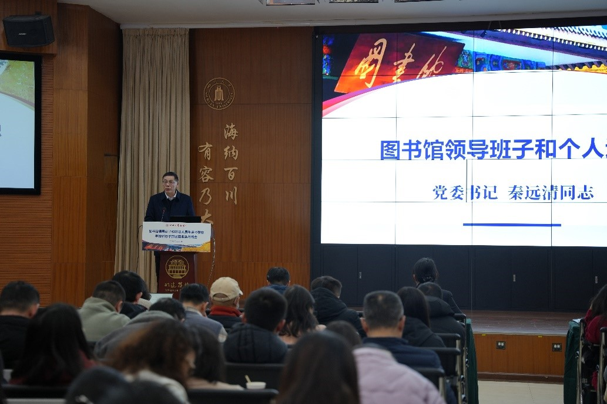

学院通知 · 竞赛比赛
四川大学图书馆召开中层领导班子和领导人员年度考核会、学校科级干部试用期满考核会暨2025年度工作总结表彰会
发布时间：2026-01-28 00:00:00
1月27日下午，四川大学图书馆在文理图书馆报告厅召开中层领导班子和领导人员年度考核会、学校科级干部试用期满考核会暨2025年度工作总结表彰会。学校组织部组织科刘建鹏同志到会指导，图书馆党政领导班子全体成员及全馆教职工参加会议。 会议由图书馆党委书记秦远清主持。在考核环节，秦远清同志代表领导班子作年度述职报告，围绕政治建设、服务战略、党建引领、服务创新与内部治理等方面，系统总结了过去一年的工作成效与存在不足，并明确了未来发展方向。随后，党委书记秦远清，馆长兰利琼，党委副书记兼纪委书记、副馆长杜小军，副馆长张盛强依次作个人述职，全面汇报2025年度履职情况。与会全体教职工以高度负责的态度，对图书馆领导班子及成员进行了民主测评。根据学校统一部署，会议还对试用期满的科级干部进行了考核。董贞贞、刘欣、胡琳三位同志依次进行个人述职，与会人员对其进行了民主测评。 图书馆2025年度工作总结和表彰会由杜小军同志主持。兰利琼同志首先传达了学校2025年工作总结会上甘霖书记和汪劲松校长讲话精神，并做图书馆2025年工作总结和2026年工作谋划报告，系统梳理了过去一年在智慧图书馆建设、AI赋能信息素养教育、资源保障与空间优化等方面取得的成效，并明确了新一年的工作重点与方向。会议对图书馆2025年度涌现出的先进个人与团队进行了隆重表彰。通过2025年获奖馆员风采展示短片生动再现了获奖集体与个人的先进事迹。获奖代表戴平、周琴、赖伟、马梦灵、侯敏、王圣洁、淳姣、冯涛等先后发言，分享了在资源建设、读者服务、技术创新、阅读推广等方面的实践心得，展现了图书馆人爱岗敬业、追求卓越的精神风貌。 会议还特别安排了庄重温馨的荣休仪式，向2025年光荣退休的教职工代表致以崇高敬意与诚挚感谢。紧接着举行了新进教职工欢迎仪式，新同事们逐一自我介绍，表达了加入图书馆大家庭的喜悦与憧憬。秦远清同志和兰利琼同志共同向新进教职工赠送《四川大学珍贵古籍名录》，勉励新人传承文脉、积极进取。新进教职工代表朱元南作发言，表达了融入图书馆大家庭、立足岗位积极进取的信心与决心。 最后，杜小军同志就寒假期间纪委有关工作要求、安全工作要求及寒假工作安排作了说明，要求全体教职工切实增强纪律意识和安全意识，确保假期各项工作安全、有序、平稳推进。 本次会议全面总结了图书馆2025年度工作，完成了干部考核评议，表彰了先进典型，弘扬了奉献精神，迎来了新的力量。全体馆员进一步统一了思想，凝聚了共识。新的一年，四川大学图书馆将继续秉承“师生为本、服务至上”的宗旨，团结协作，开拓创新，为学校“双一流”建设与高质量发展贡献智慧与力量。 文字：党政办公室 朱元南 图片：文献服务中心淳姣 党政办公室 李博航
